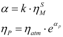

|
|
|


润滑剂
- 注释、描述如 ISO 所述，数据源： 自定义文本字段
- 滚动轴承添加剂:
- 无添加剂： 无添加剂的润滑剂，或所含添加剂在滚动轴承中的效果未经测试的润滑剂。
- 含添加剂： 在滚动轴承中已测试过有效性的润滑剂
- 油/润滑脂： 指定润滑剂是油还是润滑脂。
- 运动黏度（40°C 和 100°C 时）ν40，ν100： [mm2/s]
- 润滑剂基础油：选择选项：
- 矿物油
- 聚二醇基合成油
- 聚醚基合成油
- 聚α烯烃基合成油
- 酯基合成油
聚α烯烃：与矿物油相似，易于与矿物油混合，有些经批准可用于食品。
酯：有些适用于食品，有些可生物降解。
- 胶合试验程序： 选择选项：
- 无胶合相关信息
- FZG Test A/8.3/90; ISO 14635-1 (正常)
- FZG Test A/16.6/90
- FZG Test A/16.6/120
- FZG Test A/16.6/140
- FZG Test A10/16.6R/120; ISO 14635-2
- 胶合温度的输入
- FZG test A10/16.6R/90
- FZG test S-A10/16.6R/90
- 胶合失效载荷级（FZG 试验）：按 FZG 试验的规定输入胶合载荷级。这些值用于齿轮计算。
1= 最弱载荷级；12= 最佳载荷级
优质的齿轮润滑剂其胶合载荷级值均为 12。
- 胶合温度 θs: 你也可以输入胶合试验的胶合温度。
- 微点蚀试验程序： 选择选项
- 无微点蚀相关信息
- C-GF/8.3/90/ with Ra=0.50 θ=90° (FZG)
- C-GF/8.3/60/ with Ra=0.50 θ=60° (FZG)
- C-GF（在当前油温下）
- 载荷级微点蚀试验： 最佳可实现的载荷级为10。
- 密度 ϱ: [kg/dm3]
- 锥入度（25°C，润滑脂）Pe： [0.1mm] 该值仅用于计算润滑脂润滑的滑动轴承。
- 皂基比例（润滑脂）cs: [体积百分比] 该值仅用于计算润滑脂润滑的滑动轴承。
- k 系数，s 系数（压缩粘度）k，s： 用于计算压缩粘度（AGMA 925）：

如果不知道这些值，可输入 0。这些值随后将从标准 (AGMA 925-A03，表 2) 中获取。
- 最低/最高工作温度极限 θmin, θmax : [°C]
English Original
Lubricants
- Comment, description as specified in ISO, data source: Text fields for your own use
- Additive for rolling bearings:
- Without additives: Lubricants without additives, or with those additives whose effectiveness in rolling bearings has not been tested.
- With additives: Lubricants whose effectiveness has been tested in rolling bearings
- Oil/Grease: specify whether the lubricant is an oil or a grease.
- Kinematic viscosity at 40°C and at 100°C ν40,ν100: [mm2/s]
- Lubricant base: Selection options:
- Mineral oil
- Polyglycol-based synthetic oil
- Polyether-based synthetic oil
- Polyalphaolefin-based synthetic oil
- Ester-based synthetic oil
Polyalphaolefin: similar to mineral oil, easily mixable with mineral oil, some approved for use with foodstuffs.
Esters: some approved for use with foodstuffs, some biodegradable.
- Test procedure scuffing: Selection options:
- No information about scuffing
- FZG Test A/8.3/90; ISO 14635-1 (normal)
- FZG Test A/16.6/90
- FZG Test A/16.6/120
- FZG Test A/16.6/140
- FZG Test A10/16.6R/120; ISO 14635-2
- Input of scuffing temperature
- FZG test A10/16.6R/90
- FZG test S-A10/16.6R/90
- Failure load stage scuffing FZG test: Input load stage scuffing as specified in the FZG test. These values are required for gear calculations.
1= weakest stage; 12=best stage
Good gear lubricants all have a load stage scuffing value of 12.
- Scuffing temperature θs: You can also enter the scuffing temperature for the scuffing test procedure.
- Test procedure micropitting: Selection options
- No information about micropitting available
- C-GF/8.3/90/ with Ra=0.50 θ=90° (FZG)
- C-GF/8.3/60/ with Ra=0.50 θ=60° (FZG)
- C-GF at current oil temperature
- Load stage micropitting test: The best achievable load stage is 10.
- Density ϱ: [kg/dm3]
- Cone penetration at 25°C (grease) Pe: [0.1mm] This value is only required to calculate grease-lubricated plain bearings.
- Soap proportion (grease) cs: [Vol%] This value is only required to calculate grease-lubricated plain bearings.
- k coefficient, s coefficient (compression viscosity) k, s: Coefficient used to calculate compression viscosity (AGMA 925):
If you do not know these values, you can input 0. The values are then taken from the standard (AGMA 925-A03, Table 2).
- Lower/upper service temperature limit θmin, θmax : [°C]